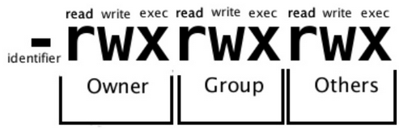

Sistema de privilegios
O Linux é um sistema multi-usuário. É necessário ter um utilizador para ter acesso. Existe um sistema de permissao que determina a quem pertence um determinado ficheiro ou pasta e que utilizador ou grupos de utilizadores podem aceder.
as permissoes pode ser exibidas ao listar os ficheiros com a opção -l no comando ls.
Qualquer ficheiro possui os seguintes niveis permissoes:
| nivel | descricao | Textual |
|---|---|---|
| owner | dono do ficheiro | u |
| grup | grupo de utilizadores | g |
| others | utilizadores em geral | o |
| all | refere u,g, o | a |
para cada nivel de permissao, existem três tipos de privilegio
| textual | permissao em ficheiro | permissao em pasta |
|---|---|---|
| r | permissao para ver o conteudo do ficheiro | permite listar o conteudo da pasta e sub-pastas |
| w | permissao para alterar o nome, apagar e modificar o conteudo do ficheiro | permite criar ficheiros/pastas e remover |
| x | permissao para executar um ficheiro | permite entrar na pasta, pesquisar e executar a partir dela |
| Permissão Octal | Privilégio | Simbolo |
|---|---|---|
| 4 | leitura | (r) |
| 2 | escrita | (w) |
| 1 | executar | (x) |
| 0 | não permitido | - |
As permissões são divididas em grupos de três, e cada posição uma permissão específica, nesta ordem: ler (r), escrever (w), executar (x)

Ja a primeira letra representa o tipo de ficheiro que pode ser:
| simbolo | descricao |
|---|---|
| - | ficheiro comum, executavel |
| d | pasta |
| l | link simbolico |
| c | dispositivo especial de caracteres |
| b | dispositivo de bloco |
| p | canal fifo |
| s | socket |
Alterar permissoes no linux - chmod
as permissoes sao alteradas com comando chmod e podem ser:
definir permissao de leitura para grupo e para outros utilizadores: chmod g=r,o-r <ficheiro>
permitir permissao de escrita para um grupo no ficheiro: chmod g+w <ficheiro>
permissoes de pastas, diferentes nas dos ficheiros
permissoes numericas octais
O modo octal é um conjunto de oito números onde cada número define um tipo de acesso diferente. É mais flexível gerenciar permissões de acesso usando o modo octal ao invés do comum, pois você especifica diretamente a permissão do dono, grupo, outros ao invés de gerenciar as permissões de cada um separadamente.
Exemplos de permissões definidas com método octal
| r | w | x | soma | Permissao |
|---|---|---|---|---|
| - | - | - | 0 | --- |
| - | - | 1 | 1 | --x |
| - | 2 | - | 2 | -w- |
| - | 2 | 1 | 3 | -wx |
| 4 | - | - | 4 | r-- |
| 4 | - | 1 | 5 | r-x |
| 4 | 2 | - | 6 | rw- |
| 4 | 2 | 1 | 7 | rwx |
alterar donos e grupos dos ficheiros - chown
O comando chown significa "mudar de proprietário. Opcionalmente pode também ser usado para alterar o grupo. O dono.grupo pode ser especificado usando o nome de grupo ou o código numérico correspondente ao grupo (GID).
Deve existir permissões de escrita no ficheiro/pasta para alterar seu dono/grupo.
sintaxe
chown [opções] [dono.grupo] [ficheiro]
| opção | descrição |
|---|---|
| dono.grupo | Nome do dono.grupo que será atribuído ao diretório/arquivo. O grupo é opcional. |
| -v, --verbose | Mostra os arquivos enquanto são alterados. |
| -f, --supress | Não mostra mensagens de erro durante a execução do programa. |
| -c, --changes | Mostra somente arquivos que forem alterados. |
| -R, --recursive | Altera dono e grupo de arquivos no diretório atual e sub-diretórios. |
alterar o dono chown joao teste.txt
alterar dono e grupo chown joao.users teste.txt
alterar recursivamente dono e grupo em todos os ficheiros chown -R joao.users *
alterar o grupo de um ficheiro - chgrp
O comando chgrp altera os atributos do grupo de um ficheiro
sintaxe: chgrp [opções] [nome do grupo] [ficheiro]
| opções | descrição |
|---|---|
| -c, --changes | Somente mostra os arquivos/grupos que forem alterados. |
| -f, --silent | Não mostra mensagens de erro para arquivos/diretórios que não puderam ser alterados. |
| -v, --verbose | Mostra todas as mensagens e arquivos sendo modificados. |
| -R, --recursive | Altera os grupos de arquivos/sub-diretórios do diretório atual. |
umask
A umask (user mask) são 3 números que definem as permissões iniciais do dono, grupo e outros utilizadores que o ficheiro/pasta receberá quando é criado ou copiado. Digite umask sem parâmetros para retornar o valor de sua umask atual.
O valor padrão da umask na maioria das distribuições é de: 0022
A umask tem efeitos diferentes caso o ficheiro que estiver sendo criado for binário (um programa executável) ou texto
| umask | binario | texto | ficheiro |
|---|---|---|---|
| 0 | r-x | rw- | rwx |
| 1 | r-- | rw- | rw- |
| 2 | r-x | r-- | r-x |
| 3 | r-- | r-- | r-- |
| 4 | --x | -w- | -wx |
| 5 | --- | -w- | -w- |
| 6 | --x | --- | --x |
| 7 | --- | --- | --- |
Um ficheiro texto criado com o comando umask 012;touch texto.txt receberá as permissões -rw-rw-r--
Um ficheiro binário copiado com o comando umask 012;cp /bin/ls /tmp/ls receberá as permissões -rwxr--r-x
Por este motivo é preciso um pouco de atenção antes de escolher a umask, um valor mal escolhido poderia causar problemas de acesso a ficheiros ou programas não sendo executados.
A umask é de grande utilidade para programas que criam ficheiros temporários, desta forma pode-se bloquear o acesso de outros utilizadores desde a criação do ficheiro, evitando recorrer ao chmod.
permissoes especiais suid e sgid
todos os processos estao vinculados ao utilizador que os iniciou. Desta maneira o programa herda as mesmas permissoes de leitura e escrita do utilizador que o executou. Algumas tarefas, no entado, exigem que o processo altere ou aceda ficheiros para os quais o utilizador nao tem a permissao necessaria.
As permissoes SUID e SGID são úteis em situações onde um programa precise acessar determinado recurso, mas os utilizadores que o usam não o possam fazer diretamente.
por exemplo alterar a propria palavra-chave exige que o ficheiro /etc/shadow seja modificiado. as permissoes limitam a escrita ao utilizador dono desse ficheiro, root.
$ ls -l /etc/shadow
-rw------- 1 root root 1007 jun 7 18:43 /etc/shadow
as permissoes especiais SUID e SGID são representadas pela letra s no lugar do x. Mas caso as permissoes especiais SUID e SGID existirem sem a permissao de execucao (x), surge uma letra MAISCULA, S.
- s = possui permissao de execução
- S = não possui permissao de execução
SUID
Permissão SUID(set owner user id) é aplicada em ficheiros executaveis, são executados como dono do ficheiro e nao com as permissoes do utilizador que o executou.
Activar a permissao SUID num ficheiro executavel:
chmod u+s [ficheiro]
O numero 4 corresponde ao bit SUID,
chmod 4777 [ficheiro]
Podemos localizar ficheiros com o bit SUID ativo com o comando:
find / -perm /4000
SGID
O bit SGID tem a mesma função do bit SUID(Set Group ID), que é aplicado na permissao nivel do grupo. O programa é executado com os privilégios do grupo a que pertence.
Activar a permissao SGID num ficheiro:
chmod g+s [ficheiro]
O numero 2 corresponde ao bit SGID:
chmod 2777 [ficheiro]
Podemos localizar ficheiros com o bit SGID ativo com o comando:
find / -perm /2000
Caso SUID e SGID estiver ativado na pasta, os ficheiros só podem ser removidos se for um dos seguintes utilizadores:
- dono da pasta
- dono do ficheiro
- root
permissao sticky bit
Pastas compartilhadas tem o incoveninente de um utilizador apagar todo o conteudo sem querer. Para evitar tal situacao existe a permissao sticky bit, que impede de utilizadores de apagar ficheiros que nao foram criados por eles proprios.
um bom exemplo do uso de sticky bit é na pasta /tmp
ls -ld /tmp
drwxrwxrwt 66 root root 1420 jun 8 19:36 /tmp
A permissao de execucao do grupo (x) é substituida por um t ou T.
- t = possui permissao de execução
- T = não possui permissao de execução
para activar a permissao sticky bit usar comando chmod:
chmod o+t </nome-pasta>
O numero 1 corresponde ao sticky bit:
chmod 1777 <ficheiro>
permissoes especiais em formato numerico
as permissoes especiais tambem podem ser manipuladas em formato octal (numerico).A permissao especial e o primeiro dos quatro digitos da opcao no formato octal.
| digito | SUID (valor 4) | SGID (valor 2) | sticky ( valor 1) |
|---|---|---|---|
| 0 | --- | -- | --- |
| 1 | --- | --- | SIM |
| 2 | --- | SIM | --- |
| 3 | --- | SIM | SIM |
| 4 | SIM | --- | --- |
| 5 | SIM | --- | SIM |
| 6 | SIM | SIM | --- |
| 7 | SIM | SIM | SIM |
softlink e hardlink
Os ficheiros links sao especiais, funcionam como atalho para outros ficheiros, evitando por exemplo o uso de caminhos complexos. existem dois tipos de links com diferentes caracteristicas:
-
softlink - link simbolico: é muito parecido com um atalho da área de trabalho no sistema Windows. O softlink apenas redireciona para a localização do ficheiro destino. Apagar um softlink não tem efeito no ficheiro físico ao qual o link está apontar. É possivel criar softlinks para qualquer ficheiro no sistema de ficheiros atual ou mesmo em outros sistemas de ficheiros. Isso torna mais flexível do que um hardlink. funcoes comuns para links simbolicos sao indicar caminhos longos frequemente usados. criar nomes mais simples e ficheiros executaveis e nomes adicionais para bibliotecas de sistema.
-
hardlink - link fisico: podemos criar varios hardlinks de ficheiros e organizar por pastas como acontece nas musicas ou fotografias sem reduzir o espaço em disco. um hardlink nao ocupa espaço algum.
o ficheiro hardlink so é apagado quando o ultimo ficheiro registado no inode é excluido.
os ficheiros especiais . e .. sao hardlinks para pastas criados exclusiamente pelo proprio sistema.
Criar atalhos - soft links
links simbolicos podem indicar para qualquer destino, até para sistema de ficheiros diferentes. para criar um link simbolico escreve o comando ln com a opcao -s.
neste exemplo criamos um atalho no ambiente de trabalho do programa firefox.
ln -s /usr/bin/firefox ~/Desktop
o link simbolico fica referenciado pela letra l no inicio das permissoes. o tamanho do ficheiro de link e exatamente a quantidade de caracteres do caminho alvo. uma seta ao lado do icon sugere um caminho a seguir. um link simbolico para um caminho absoluto so e partido quando o destino for movido ou apagado.
lrwxrwxrwx 1 user 1000 16 jul 5 06:08 firefox -> /usr/bin/firefox
para actualizar a informacao de alvo para um link simbolico. recriar o link com a opcao -f, alterar o destino para o browser chromium mas deixar o link com o nome firefox.
ln -sf /usr/bin/chromium ~/Desktop/firefox
lrwxrwxrwx 1 devilboy 1000 17 jul 5 06:24 firefox -> /usr/bin/chromium
inode
Podemos dizer que um inode deriva da expressão Index Node é uma estrutura dos dados guardados num disco rígido, USB, ou qualquer outro sistema de ficheiros.
Essa estrutura é fundamental para o correto funcionamento de um sistema de ficheiros pois permite ao sistema encontrar rapidamente um determinado ficheiro. o Inode num disco é atualizado sempre que são alterados dados no dispositivo.
mostrar inode dos ficheiros
ls -i